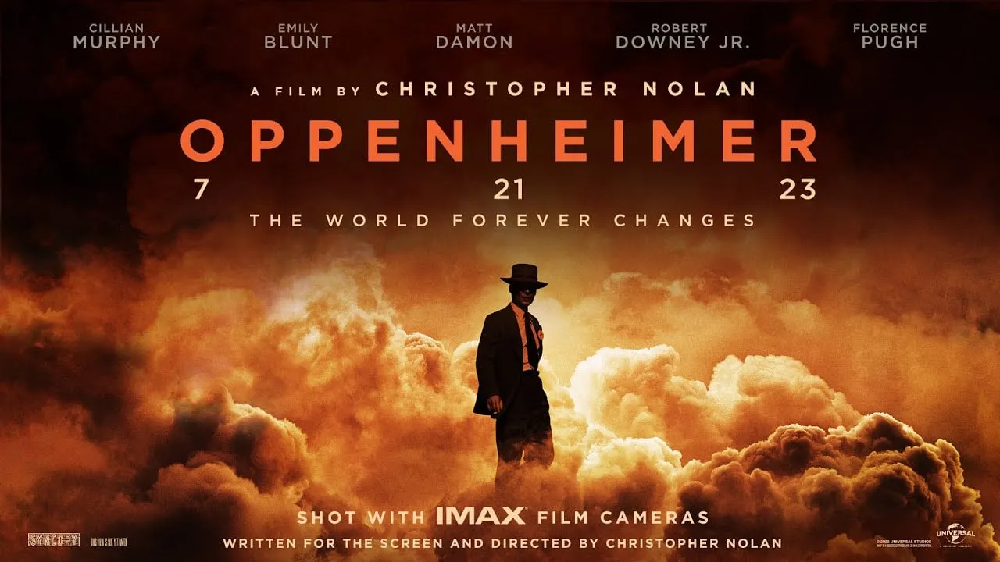
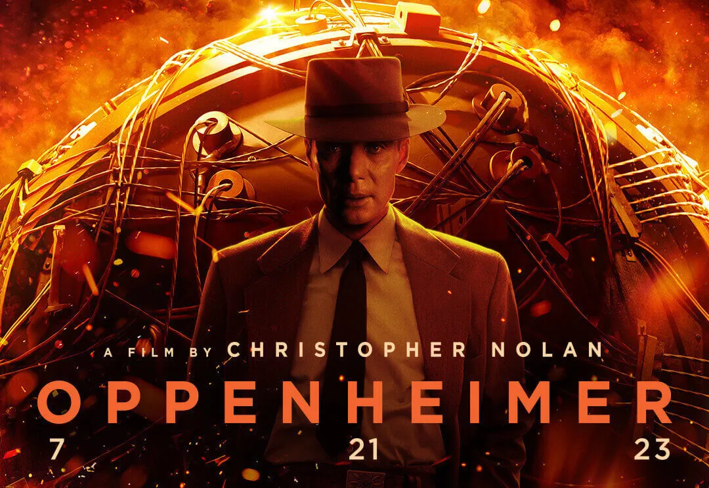

Oppenheimer
L'exploration des dilemmes éthiques du père de la bombe atomique
Bande annonce
Vidéo de la bande annonce du film
Contexte
“Oppenheimer” plonge dans les dilemmes éthiques et moraux de l'un des scientifiques les plus influents du XXe siècle, J. Robert Oppenheimer, le père de la bombe atomique. L'action se situe dans le contexte historique de la Seconde Guerre mondiale, où Oppenheimer et son équipe ont assumé un rôle central dans le développement de cette arme révolutionnaire, caractérisée par sa technologie ses applications militaires de pointes
Un film, mais pas que...
"Oppenheimer" n'est pas seulement un divertissement cinématographique mais se démarque également comme une exploration approfondie de la relation complexe entre science et éthique, mettant en lumière les dilemmes éthiques entourant la création de la bombe atomique. Il encourage le public à réfléchir profondément sur les responsabilités éthiques qui pèsent sur les scientifiques et les décideurs, et met en lumière les défis éthiques dans la recherche scientifique.
Affiche du film
L'acteur Cillian Murphy, nominé aux Oscars, incarne avec brio Oppenheimer, livrant une performance captivante qui reflète sa maîtrise de la technique dramatique. Le casting soigneusement sélectionné donne vie à des personnages historiques et complexes, ajoutant une dimension humaine à ces dilemmes moraux.
Affiche du film
En plus de son intrigue captivante, "Oppenheimer" s'attache également à recréer avec précision la période de la Seconde Guerre mondiale, en prêtant attention aux détails techniques, tels que les décors, les costumes et la direction artistique, qui contribuent à créer une immersion complète dans cet univers cinématographique, transportant le public dans le années charnières où le sort du monde était en jeu.
Résumé
En résumé, « Oppenheimer » est un film qui représente une réflexion morale au cinéma. Il offre une expérience cinématographique assez puissante, soutenue par un casting exceptionnel et une direction artistique soignée, soulignant la signification morale des avancées scientifiques et technologiques avancées. Ce film non seulement divertit mais provoque également la curiosité et la réflexion, ouvrant la voie à des discussions réfléchies sur la science, l'éthique et la responsabilité, dans un contexte historique marqué par des avancées technologiques révolutionnaires.